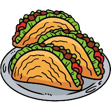

MÉXICO
GUADALAJARA


1. Cultura y tradición: Guadalajara es conocida como la cuna del mariachi y el tequila, y ofrece una rica cultura llena de música, baile, arte y gastronomía tradicional mexicana.
,Arquitectura colonial: La ciudad cuenta con hermosas arquitecturas coloniales, como la Catedral de Guadalajara y el Instituto Cultural Cabañas, declarados Patrimonio de la Humanidad por la UNESCO.
,Gastronomía: Guadalajara es famosa por su deliciosa comida, que incluye platillos como las birrias, los pozoles, las tortas ahogadas y los dulces típicos como las jericallas y los churros.
,Tequila y destilerías: La región de Guadalajara es conocida por la producción de tequila, y hay muchas destilerías que ofrecen visitas guiadas y catas de esta bebida emblemática de México.
, Mercados y artesanías: Los mercados como el Mercado Libertad (San Juan de Dios) ofrecen una gran variedad de productos locales, artesanías, ropa, comida y más, siendo un lugar ideal para explorar la cultura local.
Algunas cosas que debes tomar en cuenta si deseas visitarlo son:
Guadalajara puede experimentar congestionamiento vial en horas pico, especialmente en el centro de la ciudad y en las zonas más turísticas. Aunque Guadalajara es generalmente segura para los turistas, es importante estar atento a posibles carteristas y tomar precauciones en áreas menos seguras, especialmente por la noche. Al igual que otras ciudades grandes, Guadalajara puede experimentar problemas de contaminación atmosférica, especialmente durante los meses más secos y calurosos del año, el clima en Guadalajara puede ser caluroso y seco durante gran parte del año, lo que puede ser incómodo para algunos visitantes, especialmente aquellos que no están acostumbrados al clima cálido. y si bien muchos locales en Guadalajara hablan español, puede haber barreras de comunicación para aquellos que no hablan el idioma, especialmente en áreas menos turísticas.HIDALGO


Hidalgo cuenta con importantes sitios arqueológicos, como la Zona Arqueológica de Tula, donde se encuentran las famosas esculturas de los Atlantes, ademas
alberga varios Pueblos Mágicos, como Real del Monte y Huasca de Ocampo, que ofrecen encanto colonial, historia y belleza natural.
Ofreciendo una variedad de paisajes naturales impresionantes, incluyendo montañas, bosques, cañones y cascadas, ideales para actividades al aire libre como senderismo y ecoturismo.
de igual manera la gastronomía hidalguense es variada y deliciosa, con platillos típicos como los tamales de charales, los pasteles de masa, el pulque y los gusanos de maguey.
La arquitectura colonial y barroca de Hidalgo se puede apreciar en sus iglesias, conventos y haciendas, que son testimonio de su rica historia.
Algunas cosas que debes tomar en cuenta si deseas visitarlo son:
Sin embargo lgunas áreas de Hidalgo pueden ser inseguras debido a la delincuencia, por lo que es importante estar atento y tomar precauciones, especialmente en ciertas zonas urbanas. En comparación con otras regiones turísticas de México, la infraestructura turística en Hidalgo puede ser menos desarrollada, lo que puede afectar la comodidad y conveniencia de los visitantes. y por lo mismo el transporte público en Hidalgo puede ser limitado, lo que puede dificultar moverse entre diferentes destinos turísticos sin un vehículo propio. Hidalgo puede ser extremo en cuanto a climas, con temperaturas muy calurosas durante el día y frías por la noche, especialmente en regiones montañosas. y aunque muchos habitantes de Hidalgo hablan español, el inglés puede no ser tan común, lo que puede resultar en barreras de comunicación para los visitantes que no hablan español.YUCATÁN


Mérida es una ciudad rica en historia y cultura maya, con una arquitectura colonial impresionante, ruinas antiguas y una mezcla única de tradiciones mayas y españolas,
su comida yucateca es famosa en México por su sabor único y sus ingredientes locales, como el cochinita pibil, el poc chuc, los panuchos y los salbutes.
Mérida es un excelente lugar para comprar artesanías mexicanas auténticas, como textiles bordados, hamacas, cerámicas y joyería de plata.
En los alrededores de Mérida están llenos de cenotes, cuevas y reservas naturales donde puedes nadar, bucear y explorar la belleza natural de la región.
ademas es conocida por ser una de las ciudades más seguras de México, lo que la convierte en un destino ideal para familias y viajeros que buscan tranquilidad.
Algunas cosas que debes tomar en cuenta si deseas visitarlo son:
Puede ser extremadamente caluroso y húmedo durante gran parte del año, especialmente durante los meses de verano, lo que puede no ser ideal para todos los visitantes y aunque Mérida ofrece una gran cantidad de actividades y atracciones, algunas pueden estar ubicadas a cierta distancia de la ciudad, lo que puede requerir transporte adicional. Otro punto es que el transporte público en Mérida puede ser limitado en comparación con otras ciudades más grandes, lo que puede hacer que moverse por la ciudad sea un desafío para algunos visitantes. Durante la temporada alta, Mérida puede estar abarrotada de turistas, lo que puede afectar la experiencia y hacer que algunas atracciones estén más concurridas.PERÚ
LIMA


Lima es conocida como la capital gastronómica de América del Sur, con una increíble variedad de platos y sabores que reflejan la diversidad cultural del país.
Desde sus fascinantes ruinas incas hasta sus impresionantes casonas coloniales, Lima está repleta de historia y arquitectura que te transportarán en el tiempo,
ofrece paisajes naturales impresionantes para explorar.
Cuenta con una amplia variedad de bares, discotecas y locales de música en vivo, la vida nocturna de Lima es vibrante y emocionante para los que buscan divertirse.
Algunas cosas que debes tomar en cuenta si deseas visitarlo son:
Como en muchas grandes ciudades, la contaminación atmosférica puede ser un problema en Lima, especialmente durante los meses más secos del año y aunque en general es una ciudad segura para los turistas, hay algunas áreas en Lima donde se debe tener precaución debido a la delincuencia. El clima en Lima puede ser impredecible, con niebla persistente durante los meses de invierno y fuertes lluvias durante el verano, lo que puede afectar los planes de viaje.LIQUITOS


La ciudad está llena de vida cultural, desde sus coloridos mercados hasta sus festivales folclóricos y eventos culturales y en comparación con otras ciudades turísticas, La Paz ofrece precios más bajos en alojamiento, comida y transporte, lo que la hace atractiva para los viajeros con presupuestos ajustados.
Algunas cosas que debes tomar en cuenta si deseas visitarlo son:
El tráfico en Liquitos puede ser caótico y congestionado, especialmente durante las horas pico, lo que puede dificultar la movilidad dentro de la ciudad. y aunque no es conocida por ser peligrosa para los turistas, como en cualquier gran ciudad, se debe tener precaución con la delincuencia, especialmente en áreas concurridas y durante la noch 


Cusco es el corazón del antiguo Imperio Inca y alberga una gran cantidad de sitios arqueológicos, incluyendo la famosa ciudadela de Machu Picchu, lo que la convierte en un destino ideal para los amantes de la historia y la cultura,
cuenta con impresionantes edificios coloniales construidos sobre antiguos cimientos incas, lo que crea un ambiente único y pintoresco esta
está rodeada de hermosos paisajes naturales, desde montañas escarpadas hasta valles fértiles, ofreciendo numerosas oportunidades para hacer senderismo, trekking y otras actividades al aire libre.
su cocina es variada y deliciosa, con platos tradicionales que combinan ingredientes locales con influencias españolas.
Es un crisol de culturas, donde la tradición indígena se entrelaza con la influencia española, creando una rica mezcla de festivales, artesanías y costumbres que vale la pena explorar.
Algunas cosas que debes tomar en cuenta si deseas visitarlo son:
Cusco se encuentra a una altitud de más de 3,400 metros sobre el nivel del mar, lo que puede causar problemas de salud como el mal de altura para algunos visitantes. El clima en Cusco puede ser impredecible, con días soleados seguidos de fuertes lluvias, especialmente durante la temporada de lluvias entre noviembre y marzo po otro lado Machu Picchu y otros sitios turísticos en la región de Cusco pueden estar abarrotados de visitantes durante la temporada alta, lo que puede afectar la experiencia de viaje.CANADA


Toronto es una de las ciudades más diversas del mundo, con una amplia variedad de culturas, idiomas y tradiciones, lo que la convierte en un lugar fascinante para explorar y experimentar diferentes estilos de vida,
es conocida por ser una ciudad segura y acogedora para los turistas, con bajos índices de criminalidad en comparación con otras ciudades de tamaño similar
cuenta con una mezcla ecléctica de arquitectura moderna y histórica, con impresionantes rascacielos, edificios históricos y espacios públicos bien diseñados y
ofrece una rica escena cultural con una gran cantidad de museos, galerías de arte, teatros, festivales y eventos culturales durante todo el año.
Cuenta con acceso a espacios naturales como parques, playas y senderos para caminar, lo que permite a los visitantes disfrutar de la naturaleza sin salir de la ciudad
Algunas cosas que debes tomar en cuenta si deseas visitarlo son:
Toronto experimenta cuatro estaciones distintas, con inviernos fríos y nevados los cuales pueden ser demaciado para los turistas. 


Ottawa es conocida por su impresionante belleza natural, con el río Ottawa, canales serpenteantes y una gran cantidad de parques y espacios verdes que ofrecen oportunidades para actividades al aire libre y fotografía
, Ottawa alberga una gran cantidad de instituciones culturales y sitios históricos, incluyendo el Parlamento, museos nacionales y galerías de arte que ofrecen una visión fascinante de la historia y la cultura de Canadá.
Es una ciudad segura y tranquila, con bajos índices de criminalidad, lo que la convierte en un destino ideal para familias y viajeros que buscan una experiencia relajada cuenta con
una serie de festivales y eventos durante todo el año, incluyendo el Tulip Festival en primavera, Canada Day en verano y Winterlude en invierno, que ofrecen entretenimiento y actividades para personas de todas las edades.
Está ubicada cerca de otras ciudades importantes como Montreal y Toronto, lo que la convierte en un punto de partida ideal para explorar otras partes de Canadá.
Algunas cosas que debes tomar en cuenta si deseas visitarlo son:
Ottawa experimenta inviernos fríos y nevados, así como veranos calurosos y húmedos, lo que puede hacer que sea difícil para los visitantes adaptarse a las condiciones climáticas extremas. Aunque no tan alto como Toronto, el costo de vida en Ottawa puede ser significativo, especialmente en términos de vivienda y transporte y aunque algunos sitios turísticos y atracciones en Ottawa tienen horarios limitados de operación, especialmente durante los meses de invierno, lo que puede afectar la planificación de actividades. 


Vancouver es conocida por su espectacular belleza natural, con montañas cubiertas de nieve, bosques exuberantes y el océano Pacífico, lo que ofrece numerosas oportunidades para actividades al aire libre como senderismo, esquí y kayak,
tiene un clima templado durante todo el año, con inviernos suaves y veranos cálidos, lo que la hace atractiva para los visitantes que buscan escapar del frío extremo o el calor sofocante,
es una ciudad multicultural, con una rica mezcla de culturas, idiomas y tradiciones, lo que se refleja en su vibrante escena culinaria, festivales y eventos culturales cabe resaltar que
consistentemente se clasifica como una de las mejores ciudades para vivir en el mundo, con una alta calidad de vida, servicios públicos de alta calidad y un ambiente limpio y seguro.
Algunas cosas que debes tomar en cuenta si deseas visitarlo son:
Vancouver experimenta una cantidad significativa de lluvias durante gran parte del año, lo que puede afectar los planes de viaje y actividades al aire libre y enfrenta desafíos relacionados con la vivienda, incluyendo altos precios de alquiler y una falta de opciones asequibles, lo que puede dificultar encontrar alojamiento durante la visita.ARGENTINA


Buenos Aires es conocida por su rica escena cultural, que incluye teatros de renombre mundial, museos de arte, galerías y una próspera industria cinematográfica y musical.
La ciudad ofrece una amplia variedad de opciones gastronómicas, desde asados tradicionales hasta restaurantes de alta cocina y parrillas locales, así como cafés y pastelerías con deliciosos postres,
es famosa por su vida nocturna animada, con una gran cantidad de bares, discotecas, milongas y espectáculos de tango que ofrecen entretenimiento hasta altas horas de la noche.
La ciudad cuenta con una mezcla ecléctica de estilos arquitectónicos, que van desde edificios coloniales hasta rascacielos modernos, que reflejan su rica historia y diversidad cultural.
sus habitantes son conocidos por su hospitalidad y calidez, lo que hace que los visitantes se sientan bienvenidos y como en casa.
Algunas cosas que debes tomar en cuenta si deseas visitarlo son:
conclusi Buenos Aires ha experimentado altas tasas de inflación en los últimos años, lo que ha llevado a un aumento en el costo de vida y precios fluctuantes, especialmente para los turistas. Buenos Aires es generalmente segura para los turistas pero, como en cualquier gran ciudad, se deben tomar precauciones contra el crimen, especialmente en áreas concurridas y durante la noche. 


Córdoba alberga la Universidad Nacional de Córdoba, una de las universidades más antiguas de América del Sur y un importante centro cultural e intelectual,
Córdoba ofrece una gran variedad de paisajes naturales, que van desde las sierras y valles hasta ríos y lagos, lo que la convierte en un destino ideal para actividades al aire libre como senderismo, trekking y deportes acuáticos
Algunas cosas que debes tomar en cuenta si deseas visitarlo son:
Córdoba puede experimentar temperaturas extremas durante el verano y el invierno, con calor intenso en verano y frío en invierno, lo que puede afectar la comodidad de los visitantes. Infraestructura limitada: Aunque Córdoba es una ciudad importante, su infraestructura puede ser limitada en comparación con otras ciudades más grandes, lo que puede afectar la calidad de los servicios públicos y las opciones de transporte. 


Santa Fe es conocida como un importante centro de arte y cultura, con numerosas galerías de arte, estudios de artistas y eventos culturales, como el famoso Mercado de Santa Fe Indian Market, que atrae a visitantes de todo el mundo.
OAlgunas cosas que debes tomar en cuenta si deseas visitarlo son:
Aunque Santa Fe es una ciudad compacta, muchas de las atracciones turísticas y actividades al aire libre están ubicadas en áreas remotas o en las afueras de la ciudad, lo que puede requerir transporte adicional
cuenta con un sistema de transporte público limitado, la mayoría de los residentes y visitantes dependen del automóvil para desplazarse por la ciudad y sus alrededores, lo que puede ser inconveniente para quienes prefieren usar el transporte público.
BRASIL


Río de Janeiro es famosa por sus playas icónicas, como Copacabana e Ipanema, así como por su paisaje montañoso, incluyendo el famoso Cerro del Corcovado y el Pan de Azúcar, que ofrecen vistas espectaculares de la ciudad,
es una ciudad llena de vida y energía, con una rica escena cultural que incluye música, danza, arte callejero y festivales animados durante todo el año.
3. Carnaval: El Carnaval de Río de Janeiro es uno de los eventos más famosos del mundo, atrayendo a millones de visitantes cada año para disfrutar de desfiles coloridos, música en vivo y fiestas callejeras.
Algunas cosas que debes tomar en cuenta si deseas visitarlo son:
Río de Janeiro enfrenta importantes desafíos sociales, incluyendo la pobreza, la falta de vivienda y la desigualdad de ingresos, que pueden ser evidentes en algunas partes de la ciudad. El tráfico en Río de Janeiro puede ser caótico y congestionado, especialmente durante las horas pico, lo que puede afectar los tiempos de desplazamiento y la movilidad dentro de la ciudad. 


La ciudad cuenta con una gran cantidad de parques y espacios verdes, como el Parque Nacional de Brasilia y el Parque da Cidade, que ofrecen oportunidades para actividades al aire libre y recreativas.
ofrece una variedad de museos, galerías de arte y centros culturales que exhiben la rica historia y cultura de Brasil, así como eventos culturales y festivales durante todo el año,
En comparación con otras ciudades brasileñas, Brasilia tiene una reputación de ser una ciudad segura para los visitantes, con bajos índices de criminalidad.